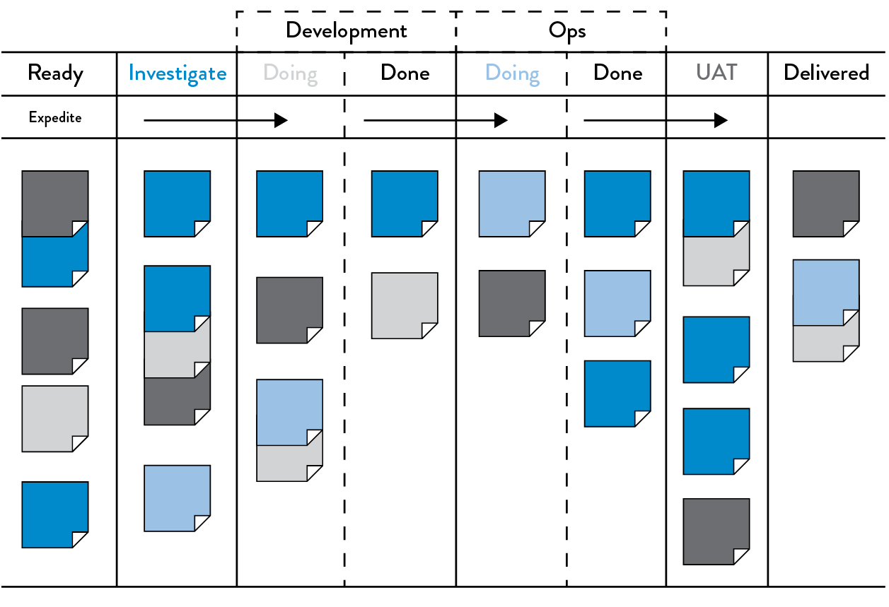
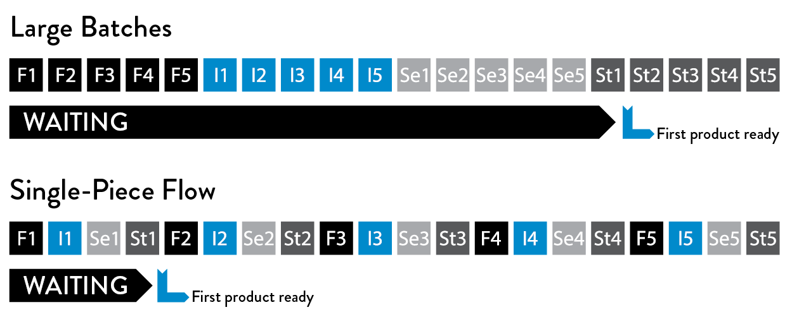

2The First Way:
The Principles of Flow
In the technology value stream, work typically flows from Development to Operations, the functional areas between our business and our customers. The First Way requires the fast and smooth flow of work from Development to Operations, to deliver value to customers quickly. We optimize for this global goal instead of local goals, such as Development feature completion rates, test find/fix ratios, or Ops availability measures.
We increase flow by making work visible, by reducing batch sizes and intervals of work, and by building quality in, preventing defects from being passed to downstream work centers. By speeding up the flow through the technology value stream, we reduce the lead time required to fulfill internal and external customer requests, further increasing the quality of our work while making us more agile and able to out-experiment the competition.
Our goal is to decrease the amount of time required for changes to be deployed into production and to increase the reliability and quality of those services. Clues on how we do this in the technology value stream can be gleaned from how the Lean principles were applied to the manufacturing value stream.
MAKE OUR WORK VISIBLE
A significant difference between technology and manufacturing value streams is that our work is invisible. Unlike physical processes, in the technology value stream we cannot easily see where flow is being impeded or when work is piling up in front of constrained work centers. Transferring work between work centers is usually highly visible and slow because inventory must be physically moved.
However, in technology work the move can be done with a click of a button, such as by re-assigning a work ticket to another team. Because it is so easy, work can bounce between teams endlessly due to incomplete information, or work can be passed onto downstream work centers with problems that remain completely invisible until we are late delivering what we promised to the customer or our application fails in the production environment.
To help us see where work is flowing well and where work is queued or stalled, we need to make our work as visible as possible. One of the best methods of doing this is using visual work boards, such as kanban boards or sprint planning boards, where we can represent work on physical or electronic cards. Work originates on the left (often being pulled from a backlog), is pulled from work center to work center (represented in columns), and finishes when it reaches the right side of the board, usually in a column labeled “done” or “in production.”
 Figure 6: An example kanban board, spanning Requirements, Dev, Test, Staging, and In Production (Source: David J. Andersen and Dominica DeGrandis, Kanban for ITOps, training materials for workshop, 2012.)
Not only does our work become visible, we can also manage our work so that it flows from left to right as quickly as possible. Furthermore, we can measure lead time from when a card is placed on the board to when it is moved into the “Done” column.
Ideally, our kanban board will span the entire value stream, defining work as completed only when it reaches the right side of the board (figure 6). Work is not done when Development completes the implementation of a feature—rather, it is only done when our application is running successfully in production, delivering value to the customer.
By putting all work for each work center in queues and making it visible, all stakeholders can more easily prioritize work in the context of global goals. Doing this enables each work center to single-task on the highest priority work until it is completed, increasing throughput.
LIMIT WORK IN PROCESS (WIP)
In manufacturing, daily work is typically dictated by a production schedule that is generated regularly (e.g., daily, weekly), establishing which jobs must be run based on customer orders, order due dates, parts available, and so forth.
In technology, our work is usually far more dynamic—this is especially the case in shared services, where teams must satisfy the demands of many different stakeholders. As a result, daily work becomes dominated by the priority du jour, often with requests for urgent work coming in through every communication mechanism possible, including ticketing systems, outage calls, emails, phone calls, chat rooms, and management escalations.
Disruptions in manufacturing are also highly visible and costly, often requiring breaking the current job and scrapping any incomplete work in process to start the new job. This high level of effort discourages frequent disruptions.
However, interrupting technology workers is easy, because the consequences are invisible to almost everyone, even though the negative impact to productivity may be far greater than in manufacturing. For instance, an engineer assigned to multiple projects must switch between tasks, incurring all the costs of having to re-establish context, as well as cognitive rules and goals.
Studies have shown that the time to complete even simple tasks, such as sorting geometric shapes, significantly degrades when multitasking. Of course, because our work in the technology value stream is far more cognitively complex than sorting geometric shapes, the effects of multitasking on process time is much worse.
We can limit multitasking when we use a kanban board to manage our work, such as by codifying and enforcing WIP (work in progress) limits for each column or work center that puts an upper limit on the number of cards that can be in a column.
For example, we may set a WIP limit of three cards for testing. When there are already three cards in the test lane, no new cards can be added to the lane unless a card is completed or removed from the “in work” column and put back into queue (i.e., putting the card back to the column to the left). Nothing can can be worked on until it is represented first in a work card, reinforcing that all work must be made visible.
Dominica DeGrandis, one of the leading experts on using kanbans in DevOps value streams, notes that “controlling queue size [WIP] is an extremely powerful management tool, as it is one of the few leading indicators of lead time—with most work items, we don’t know how long it will take until it’s actually completed.”
Limiting WIP also makes it easier to see problems that prevent the completion of work.† For instance, when we limit WIP, we find that we may have nothing to do because we are waiting on someone else. Although it may be tempting to start new work (i.e., “It’s better to be doing something than nothing”), a far better action would be to find out what is causing the delay and help fix that problem. Bad multitasking often occurs when people are assigned to multiple projects, resulting in many prioritization problems.
In other words, as David J. Andersen, author of Kanban: Successful Evolutionary Change for Your Technology Business, quipped, “Stop starting. Start finishing.”
REDUCE BATCH SIZES
Another key component to creating smooth and fast flow is performing work in small batch sizes. Prior to the Lean manufacturing revolution, it was common practice to manufacture in large batch sizes (or lot sizes), especially for operations where job setup or switching between jobs was time-consuming or costly. For example, producing large car body panels requires setting large and heavy dies onto metal stamping machines, a process that could take days. When changeover cost is so expensive, we would often stamp as many panels at a time as possible, creating large batches in order to reduce the number of changeovers.
However, large batch sizes result in skyrocketing levels of WIP and high levels of variability in flow that cascade through the entire manufacturing plant. The result is long lead times and poor quality—if a problem is found in one body panel, the entire batch has to be scrapped.
One of the key lessons in Lean is that in order to shrink lead times and increase quality, we must strive to continually shrink batch sizes. The theoretical lower limit for batch size is single-piece flow, where each operation is performed one unit at a time.‡
The dramatic differences between large and small batch sizes can be seen in the simple newsletter mailing simulation described in Lean Thinking: Banish Waste and Create Wealth in Your Corporation by James P. Womack and Daniel T. Jones.
Suppose in our own example we have ten brochures to send and mailing each brochure requires four steps: fold the paper, insert the paper into the envelope, seal the envelope, and stamp the envelope.
The large batch strategy (i.e., “mass production”) would be to sequentially perform one operation on each of the ten brochures. In other words, we would first fold all ten sheets of paper, then insert each of them into envelopes, then seal all ten envelopes, and then stamp them.
On the other hand, in the small batch strategy (i.e., “single-piece flow”), all the steps required to complete each brochure are performed sequentially before starting on the next brochure. In other words, we fold one sheet of paper, insert it into the envelope, seal it, and stamp it—only then do we start the process over with the next sheet of paper.
The difference between using large and small batch sizes is dramatic (see figure 7). Suppose each of the four operations takes ten seconds for each of the ten envelopes. With the large batch size strategy, the first completed and stamped envelope is produced only after 310 seconds.
Worse, suppose we discover during the envelope sealing operation that we made an error in the first step of folding—in this case, the earliest we would discover the error is at two hundred seconds, and we have to refold and reinsert all ten brochures in our batch again.
 Figure 7: Simulation of “envelope game” (fold, insert, seal, and stamp the envelope)
(Source: Stefan Luyten, “Single Piece Flow: Why mass production isn’t the most efficient way of doing ‘stuff’,” Medium.com, August 8, 2014, https://medium.com/@stefanluyten/single-piece-flow-5d2c2bec845b#.9o7sn74ns.)
In contrast, in the small batch strategy the first completed stamped envelope is produced in only forty seconds, eight times faster than the large batch strategy. And, if we made an error in the first step, we only have to redo the one brochure in our batch. Small batch sizes result in less WIP, faster lead times, faster detection of errors, and less rework.
The negative outcomes associated with large batch sizes are just as relevant to the technology value stream as in manufacturing. Consider when we have an annual schedule for software releases, where an entire year’s worth of code that Development has worked on is released to production deployment.
Like in manufacturing, this large batch release creates sudden, high levels of WIP and massive disruptions to all downstream work centers, resulting in poor flow and poor quality outcomes. This validates our common experience that the larger the change going into production, the more difficult the production errors are to diagnose and fix, and the longer they take to remediate.
In a post on Startup Lessons Learned, Eric Ries states, “The batch size is the unit at which work-products move between stages in a development [or DevOps] process. For software, the easiest batch to see is code. Every time an engineer checks in code, they are batching up a certain amount of work. There are many techniques for controlling these batches, ranging from the tiny batches needed for continuous deployment to more traditional branch-based development, where all of the code from multiple developers working for weeks or months is batched up and integrated together.”
The equivalent to single piece flow in the technology value stream is realized with continuous deployment, where each change committed to version control is integrated, tested, and deployed into production. The practices that enable this are described in Part IV.
REDUCE THE NUMBER OF HANDOFFS
In the technology value stream, whenever we have long deployment lead times measured in months, it is often because there are hundreds (or even thousands) of operations required to move our code from version control into the production environment. To transmit code through the value stream requires multiple departments to work on a variety of tasks, including functional testing, integration testing, environment creation, server administration, storage administration, networking, load balancing, and information security.
Each time the work passes from team to team, we require all sorts of communication: requesting, specifying, signaling, coordinating, and often prioritizing, scheduling, deconflicting, testing, and verifying. This may require using different ticketing or project management systems; writing technical specification documents; communicating via meetings, emails, or phone calls; and using file system shares, FTP servers, and Wiki pages.
Each of these steps is a potential queue where work will wait when we rely on resources that are shared between different value streams (e.g., centralized operations). The lead times for these requests are often so long that there is constant escalation to have work performed within the needed timelines.
Even under the best circumstances, some knowledge is inevitably lost with each handoff. With enough handoffs, the work can completely lose the context of the problem being solved or the organizational goal being supported. For instance, a server administrator may see a newly created ticket requesting that user accounts be created, without knowing what application or service it’s for, why it needs to be created, what all the dependencies are, or whether it’s actually recurring work.
To mitigate these types of problems, we strive to reduce the number of handoffs, either by automating significant portions of the work or by reorg-anizing teams so they can deliver value to the customer themselves, instead of having to be constantly dependent on others. As a result, we increase flow by reducing the amount of time that our work spends waiting in queue, as well as the amount of non–value-added time. See Appendix 4.
CONTINUALLY IDENTIFY AND ELEVATE OUR CONSTRAINTS
To reduce lead times and increase throughput, we need to continually identify our system’s constraints and improve its work capacity. In Beyond the Goal, Dr. Goldratt states, “In any value stream, there is always a direction of flow, and there is always one and only constraint; any improvement not made at that constraint is an illusion.” If we improve a work center that is positioned before the constraint, work will merely pile up at the bottleneck even faster, waiting for work to be performed by the bottlenecked work center.
On the other hand, if we improve a work center positioned after the bottleneck, it remains starved, waiting for work to clear the bottleneck. As a solution, Dr. Goldratt defined the “five focusing steps”:
- Identify the system’s constraint.
- Decide how to exploit the system’s constraint.
- Subordinate everything else to the above decisions.
- Elevate the system’s constraint.
- If in the previous steps a constraint has been broken, go back to step one, but do not allow inertia to cause a system constraint.
In typical DevOps transformations, as we progress from deployment lead times measured in months or quarters to lead times measured in minutes, the constraint usually follows this progression:
- Environment creation: We cannot achieve deployments on-demand if we always have to wait weeks or months for production or test environments. The countermeasure is to create environments that are on demand and completely self-serviced, so that they are always available when we need them.
- Code deployment: We cannot achieve deployments on demand if each of our production code deployments take weeks or months to perform (i.e., each deployment requires 1,300 manual, error-prone steps, involving up to three hundred engineers). The countermeasure is to automate our deployments as much as possible, with the goal of being completely automated so they can be done self-service by any developer.
- Test setup and run: We cannot achieve deployments on demand if every code deployment requires two weeks to set up our test environments and data sets, and another four weeks to manually execute all our regression tests. The countermeasure is to automate our tests so we can execute deployments safely and to parallelize them so the test rate can keep up with our code development rate.
- Overly tight architecture: We cannot achieve deployments on demand if overly tight architecture means that every time we want to make a code change we have to send our engineers to scores of committee meetings in order to get permission to make our changes. Our countermeasure is to create more loosely-coupled architecture so that changes can be made safely and with more autonomy, increasing developer productivity.
After all these constraints have been broken, our constraint will likely be Development or the product owners. Because our goal is to enable small teams of developers to independently develop, test, and deploy value to customers quickly and reliably, this is where we want our constraint to be. High performers, regardless of whether an engineer is in Development, QA, Ops, or Infosec, state that their goal is to help maximize developer productivity.
When the constraint is here, we are limited only by the number of good business hypotheses we create and our ability to develop the code necessary to test these hypotheses with real customers.
The progression of constraints listed above are generalizations of typical transformations—techniques to identify the constraint in actual value streams, such as through value stream mapping and measurements, are described later in this book.
ELIMINATE HARDSHIPS AND WASTE IN THE VALUE STREAM
Shigeo Shingo, one of the pioneers of the Toyota Production System, believed that waste constituted the largest threat to business viability—the commonly used definition in Lean is “the use of any material or resource beyond what the customer requires and is willing to pay for.” He defined seven major types of manufacturing waste: inventory, overproduction, extra processing, transportation, waiting, motion, and defects.
More modern interpretations of Lean have noted that “eliminating waste” can have a demeaning and dehumanizing context; instead, the goal is reframed to reduce hardship and drudgery in our daily work through continual learning in order to achieve the organization’s goals. For the remainder of this book, the term waste will imply this more modern definition, as it more closely matches the DevOps ideals and desired outcomes.
In the book Implementing Lean Software Development: From Concept to Cash, Mary and Tom Poppendieck describe waste and hardship in the software development stream as anything that causes delay for the customer, such as activities that can be bypassed without affecting the result.
The following categories of waste and hardship come from Implementing Lean Software Development unless otherwise noted:
- Partially done work: This includes any work in the value stream that has not been completed (e.g., requirement documents or change orders not yet reviewed) and work that is sitting in queue (e.g., waiting for QA review or server admin ticket). Partially done work becomes obsolete and loses value as time progresses.
- Extra processes: Any additional work that is being performed in a process that does not add value to the customer. This may include documentation not used in a downstream work center, or reviews or approvals that do not add value to the output. Extra processes add effort and increase lead times.
- Extra features: Features built into the service that are not needed by the organization or the customer (e.g., “gold plating”). Extra features add complexity and effort to testing and managing functionality.
- Task switching: When people are assigned to multiple projects and value streams, requiring them to context switch and manage dependencies between work, adding additional effort and time into the value stream.
- Waiting: Any delays between work requiring resources to wait until they can complete the current work. Delays increase cycle time and prevent the customer from getting value.
- Motion: The amount of effort to move information or materials from one work center to another. Motion waste can be created when people who need to communicate frequently are not colocated. Handoffs also create motion waste and often require additional communication to resolve ambiguities.
- Defects: Incorrect, missing, or unclear information, materials, or products create waste, as effort is needed to resolve these issues. The longer the time between defect creation and defect detection, the more difficult it is to resolve the defect.
- Nonstandard or manual work: Reliance on nonstandard or manual work from others, such as using non-rebuilding servers, test environments, and configurations. Ideally, any dependencies on Operations should be automated, self-serviced, and available on demand.
- Heroics: In order for an organization to achieve goals, individuals and teams are put in a position where they must perform unreasonable acts, which may even become a part of their daily work (e.g., nightly 2:00 a.m. problems in production, creating hundreds of work tickets as part of every software release).§
Our goal is to make these wastes and hardships—anywhere heroics become necessary—visible, and to systematically do what is needed to alleviate or eliminate these burdens and hardships to achieve our goal of fast flow.
CONCLUSION
Improving flow through the technology value stream is essential to achieving DevOps outcomes. We do this by making work visible, limiting WIP, reducing batch sizes and the number of handoffs, continually identifying and evaluating our constraints, and eliminating hardships in our daily work.
The specific practices that enable fast flow in the DevOps value stream are presented in Part IV. In the next chapter, we present The Second Way: The Principles of Feedback.

Table of contents
- Preface
- Foreword
- Imagine a World Where Dev and Ops Become DevOps
-
Part I The Three Ways
- A BRIEF HISTORY
- 1 Agile, Continuous Delivery, and the Three Ways
- 2 The First Way: The Principles of Flow
- 3 The Second Way: The Principles of Feedback
- 4 The Third Way: The Principles of Continual Learning and Experimentation
-
Part II Where to Start
- Introduction
- 5 Selecting Which Value Stream to Start With
- 6 Understanding the Work in Our Value Stream, Making it Visible, and Expanding it Across the Organization
-
7 How to Design Our Organization and Architecture with Conway’s Law in Mind
- ORGANIZATIONAL ARCHETYPES
- PROBLEMS OFTEN CAUSED BY OVERLY FUNCTIONAL ORIENTATION (“OPTIMIZING FOR COST”)
- ENABLE MARKET-ORIENTED TEAMS (“OPTIMIZING FOR SPEED”)
- MAKING FUNCTIONAL ORIENTATION WORK
- TESTING, OPERATIONS, AND SECURITY AS EVERYONE’S JOB, EVERY DAY
- ENABLE EVERY TEAM MEMBER TO BE A GENERALIST
- FUND NOT PROJECTS, BUT SERVICES AND PRODUCTS
- DESIGN TEAM BOUNDARIES IN ACCORDANCE WITH CONWAY’S LAW
- CREATE LOOSELY-COUPLED ARCHITECTURES TO ENABLE DEVELOPER PRODUCTIVITY AND SAFETY
- CONCLUSION
- 8 How to Get Great Outcomes by Integrating Operations into the Daily Work of Development
-
PART III—THE FIRST WAY: THE TECHNICAL PRACTICES OF FLOW
- 9 Create the Foundations of Our Deployment Pipeline
-
10 Enable Fast and Reliable Automated Testing
- CONTINUOUSLY BUILD, TEST, AND INTEGRATE OUR CODE AND ENVIRONMENTS
-
BUILD A FAST AND RELIABLE AUTOMATED VALIDATION TEST SUITE
- CATCH ERRORS AS EARLY IN OUR AUTOMATED TESTING AS POSSIBLE
- ENSURE TESTS RUN QUICKLY (IN PARALLEL, IF NECESSARY)
- WRITE OUR AUTOMATED TESTS BEFORE WE WRITE THE CODE (“TEST-DRIVEN DEVELOPMENT”)
- AUTOMATE AS MANY OF OUR MANUAL TESTS AS POSSIBLE
- INTEGRATE PERFORMANCE TESTING INTO OUR TEST SUITE
- INTEGRATE NON-FUNCTIONAL REQUIREMENTS TESTING INTO OUR TEST SUITE
- PULL OUR ANDON CORD WHEN THE DEPLOYMENT PIPELINE BREAKS
- CONCLUSION
- 11 Enable and Practice Continuous Integration
- 12 Automate and Enable Low-Risk Releases
- 13 Architect for Low-Risk Releases
-
PART IV—THE SECOND WAY: THE TECHNICAL PRACTICES OF FEEDBACK
- Introduction
-
14 Create Telemetry to Enable Seeing and Solving Problems
- CREATE OUR CENTRALIZED TELEMETRY INFRASTRUCTURE
- CREATE APPLICATION LOGGING TELEMETRY THAT HELPS PRODUCTION
- USE TELEMETRY TO GUIDE PROBLEM SOLVING
- ENABLE CREATION OF PRODUCTION METRICS AS PART OF DAILY WORK
- CREATE SELF-SERVICE ACCESS TO TELEMETRY AND INFORMATION RADIATORS
- FIND AND FILL ANY TELEMETRY GAPS
- CONCLUSION
- 15 Analyze Telemetry to Better Anticipate Problems and Achieve Goals
- 16 Enable Feedback So Development and Operations Can Safely Deploy Code
- 17 Integrate Hypothesis-Driven Development and A/B Testing into Our Daily Work
-
18 Create Review and Coordination Processes to Increase Quality of Our Current Work
- THE DANGERS OF CHANGE APPROVAL PROCESSES
- POTENTIAL DANGERS OF “OVERLY CONTROLLING CHANGES”
- ENABLE COORDINATION AND SCHEDULING OF CHANGES
- ENABLE PEER REVIEW OF CHANGES
- POTENTIAL DANGERS OF DOING MORE MANUAL TESTING AND CHANGE FREEZES
- ENABLE PAIR PROGRAMMING TO IMPROVE ALL OUR CHANGES
- FEARLESSLY CUT BUREAUCRATIC PROCESSES
- CONCLUSION
- PART IV CONCLUSION
-
PART V—THE THIRD WAY: THE TECHNICAL PRACTICES OF CONTINUAL LEARNING AND EXPERIMENTATION
- Introduction
-
19 Enable and Inject Learning into Daily Work
- ESTABLISH A JUST, LEARNING CULTURE
- SCHEDULE BLAMELESS POST-MORTEM MEETINGS AFTER ACCIDENTS OCCUR
- PUBLISH OUR POST-MORTEMS AS WIDELY AS POSSIBLE
- DECREASE INCIDENT TOLERANCES TO FIND EVER-WEAKER FAILURE SIGNALS
- REDEFINE FAILURE AND ENCOURAGE CALCULATED RISK-TAKING
- INJECT PRODUCTION FAILURES TO ENABLE RESILIENCE AND LEARNING
- INSTITUTE GAME DAYS TO REHEARSE FAILURES
- CONCLUSION
-
20 Convert Local Discoveries into Global Improvements
- USE CHAT ROOMS AND CHAT BOTS TO AUTOMATE AND CAPTURE ORGANIZATIONAL KNOWLEDGE
- AUTOMATE STANDARDIZED PROCESSES IN SOFTWARE FOR RE-USE
- CREATE A SINGLE, SHARED SOURCE CODE REPOSITORY FOR OUR ENTIRE ORGANIZATION
- SPREAD KNOWLEDGE BY USING AUTOMATED TESTS AS DOCUMENTATION AND COMMUNITIES OF PRACTICE
- DESIGN FOR OPERATIONS THROUGH CODIFIED NON-FUNCTIONAL REQUIREMENTS
- BUILD REUSABLE OPERATIONS USER STORIES INTO DEVELOPMENT
- ENSURE TECHNOLOGY CHOICES HELP ACHIEVE ORGANIZATIONAL GOALS
- CONCLUSION
- 21 Reserve Time to Create Organizational Learning and Improvement
-
22 Information Security as Everyone’s Job, Every Day
- INTEGRATE SECURITY INTO DEVELOPMENT ITERATION DEMONSTRATIONS
- INTEGRATE SECURITY INTO DEFECT TRACKING AND POST-MORTEMS
- INTEGRATE PREVENTIVE SECURITY CONTROLS INTO SHARED SOURCE CODE REPOSITORIES AND SHARED SERVICES
- INTEGRATE SECURITY INTO OUR DEPLOYMENT PIPELINE
- ENSURE SECURITY OF THE APPLICATION
- ENSURE SECURITY OF OUR SOFTWARE SUPPLY CHAIN
- ENSURE SECURITY OF THE ENVIRONMENT
- INTEGRATE INFORMATION SECURITY INTO PRODUCTION TELEMETRY
- CREATING SECURITY TELEMETRY IN OUR APPLICATIONS
- CREATING SECURITY TELEMETRY IN OUR ENVIRONMENT
- PROTECT OUR DEPLOYMENT PIPELINE
- CONCLUSION
-
23 Protecting the Deployment Pipeline
- INTEGRATE SECURITY AND COMPLIANCE INTO CHANGE APPROVAL PROCESSES
- RE-CATEGORIZE THE MAJORITY OF OUR LOWER RISK CHANGES AS STANDARD CHANGES
- WHAT TO DO WHEN CHANGES ARE CATEGORIZED AS NORMAL CHANGES
- REDUCE RELIANCE ON SEPARATION OF DUTY
- ENSURE DOCUMENTATION AND PROOF FOR AUDITORS AND COMPLIANCE OFFICERS
- CONCLUSION
- PART VI CONCLUSION
- A Call to Action
-
Appendices
- APPENDIX 1 THE CONVERGENCE OF DEVOPS
- APPENDIX 2 THEORY OF CONSTRAINTS AND CORE, CHRONIC CONFLICTS
- APPENDIX 3 TABULAR FORM OF DOWNWARD SPIRAL
- APPENDIX 4 THE DANGERS OF HANDOFFS AND QUEUES
- APPENDIX 5 MYTHS OF INDUSTRIAL SAFETY
- APPENDIX 6 THE TOYOTA ANDON CORD
- APPENDIX 7 COTS SOFTWARE
- APPENDIX 8 POST-MORTEM MEETINGS
- APPENDIX 9 THE SIMIAN ARMY
- APPENDIX 10 TRANSPARENT UPTIME
- Additional Resources
- Endnotes
- Index
- Acknowledgments
- Author Biographies